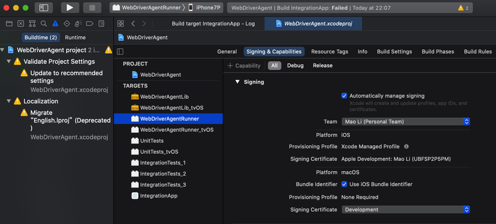
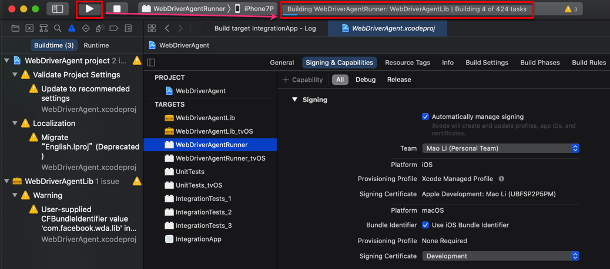

如何用XCode编译WebDriverAgent.xcodeproj
对于下载到WebDriverAgent的源码中的WebDriverAgent.xcodeproj，第一次编译最好去用XCode编译。
因为往往涉及到配置Team和自动签名等事宜。
下面就来介绍，如何用XCode去配置和编译WebDriverAgent.xcodeproj
双击WebDriverAgent.xcodeproj

会自动用XCode打开：

点击左上角的项目，进入项目属性，点击TARGETS中的WebDriverAgentRunner，切换到Signing & Capabilities：

默认Team是None，需要去选择一个自己的苹果账号：

然后会触发自动修复，显示Waiting to repair：

看到没有其他警告或错误，就表示自动创建签名和Profile等工作正常了：

接着即可去编译了：点击左上角▶️按钮，即可触发编译，显示Building ...

之后即可正常的Product->Test去测试，启动服务，供后续使用了。
Failed to register bundle identifier
如果Signing & Capablities的自动修复后报错：
Failed to register bundle identifier
The app identifier "com.facebook.WebDriverAgentRunner" cannot be registered to your development team because it is not available. Change your bundle identifier to a unique string to try again.

原因：（很可能是）默认的ID：com.facebook.WebDriverAgentRunner已存在，重复了，导致无法继续。
解决办法：修改为其他（独一无二的）值
操作步骤：
WebDriverAgentRunner的属性 -> Build Settings -> Packaging -> Product Bundle Identifier

把值从默认的：com.facebook.WebDriverAgentRunner改为别的，确保不重复的值，比如我此处改为：com.facebook.WebDriverAgentRunnerCrifan

别处调用到此处的Product Bundle Identifier
后来注意到一个细节，别处会调用到此处的Product Bundle Identifier中的值
比如：Info->Key->Bundle Identifier: $(PRODUCT_BUNDLE_IDENTIFIER)

A build only device cannot be used to run this target
如果编译期间报错：
A build only device cannot be used to run this target.
No supported iOS devices are available. Connect a device to run your application or choose a simulated device as the destination.
则说明是没有选择正确的设备。
此处是需要去确保iOS设备已连接，并选择目标设备为对应iOS设备。
此处iOS设备是：iPhone7P
先连接到Mac中：

以及可以借助于idevice_id去确保能找到设备ID，说明设备的确已连接：
idevice_id -l
3dc13714e21415898e8e2c2863d96990a4d69c97
然后去选择目标设备为iPhone7P

后续即可正常编译和测试。